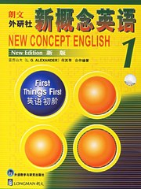

blindDone + STATS.blindN / blindSec；不写 reviews、不触发 dueAt。7 轮循环只跑后三段。index.html:907-917）。不录音、不打分。el2_events。微信分享只做一键唤起系统分享面板 / 微信会话，不能直达指定群，不叫打卡、不绑奖励。#10B981、直径 56、凸出 16、白色描边环 4px、白色线性耳机 26px、无文字、常亮无选中态），落地＝TABS 中间插 ['#/listen','',耳机svg] + nav() 特判渲染 class="fab" + .fabbtn CSS，nav.tabs a{flex:1} 弹性等分零改动。{cid}:{level}、只含 mp3 不含 data；新增 el2_pack 键与 el2_dl 键空间隔离，图标一律实查 el2-content；levelSrc 分离 publisher（TH!NK 官方锚点）与 quantile（NCE2 难度参考，只进「参考」档，禁「NCE2 = A1」表述）。covers/*.jpg——正在听/收藏行用圆形播放键、黑胶中心用绿底文字标签，从根上避开图片渲染问题。#F5F6F8 / 描线 #E9ECEF / 墨 #212529 / 次要 #6C757D / 唱片 #1A1A1A / 绿填充 #10B981 / 绿文字 #0B8A5F / 绿浅底 #E6F7F0；橙 #E8590C 并入绿系。11-17 改定：学习四段与听单统一用「冷灰 + 品牌绿」，不再分区换板；功能填充/小字用深绿 #0B8A5F，品牌绿 #10B981 只做色块与浅底。00:48 / 01:16 + 上一句 / 播放 / 下一句三键，无播放队列键，配色全页面统一「冷灰 + 品牌绿」；屏内「听这句 / 听原句 / 跟读一次 / 下一句」让位底部条。录音关改用断点录制控件，不再放播放条。blindDone + STATS.blindN / blindSec；本机只记作答次数与分支结果用于跳转，不写 reviews、不触发 dueAt，对错内容不进云同步。revfin 改「有效提取」+ 3 天宽限 + 多轮到期合并。hard[] 加 src:'auto'|'manual'；HARDF 方案 C 的课程范围跟随逻辑不变。el2_events 云同步、不与奖励绑定；分享只带完成信息，不带录音原文。index.html:968-974；逐句精听 + ★ :907-917；跟读 :937-957；复述 :989。audio/L01.mp3（76.24s）；L01 第 0 句 i=0, t=12.8–18.13, meta:true 为现成英文题干；句级 t / t2 全课可用。question.en / zh（data/L01.json:7-10）提供题干与中文提示；句级 t / t2 与 i=0 英文题干全课可用。唯一新增的是 3 个英文选项文案（v3.4 只有 2 个中文选项），不新增数据文件、不新增字段。el2_fav（设备级，同 el2_mycourses 口径）；正在听卡数据复用 el2_progress + data/L*.json 的 duration；难度标签用九层加权分位（见增补规格 6）；二期再做榜单聚合与跨课程推荐（NCE1/RE 数据就绪后）。#0B8A5F（4.36:1），品牌绿 #10B981 只做色块与浅底，避免白字对比不足；真实课本封面保持彩色，不套功能色；红色 #B04A43 仅用于词级 diff 状态；顶部四段条背景透明，直接借用页面冷灰底。.seg：灰底容器 #F1F3F5、白底选中块、深绿选中字，只有段数不同（3 段 / 2 段）；「读完了」为全圆绿色实心，与分段同为 34px 高。audio/L01.mp3（76.24s），无播放键；期间不显示题干、选项、译文、答案，播完自动出题。"Why did the writer complain?"（源 data/L01.json 的 question.en）；3 个英文选项按 i=2–8 构造——正确项 A 出自 i=6 + i=5，干扰项 B/C 与 i=3/i=2 相斥。question.zh + 选项译文，一次一层展开、默认不常驻。blindDone + STATS.blindN / blindSec 与作答次数；不写 reviews、不触发 dueAt。第二次答错后的揭底是教学提示，不计分。盲听只在首学做一次，7 轮不重跑。t/t2，不自动播放、不写 reviews。N=min(7, 奇数(floor(可用高/行高)))，横屏 5 行。横屏可用高仅 230px，5 行须压行距——padding:2px 18px、line-height:1.32、译文 margin-top:0；沿用默认的 5px/1.4 会使内容达 252px、居中后上下各裁 11px，首行英文会被整行吃掉（11-19 修正）。竖屏 7 行用默认行距，不受影响。.ktool 内 语言 seg / 遍数 seg / 「读完了」统一 34px 高、全圆角；布局改 选择器成组靠左 + 主按钮靠右（原三件 space-between 在 784 宽横屏上被拉开到各 240px 空隙）。按钮去两屏 inline min-width（原 120 / 104 不一致），改由内容撑开 + margin-left:auto 归右。落地只用一条 CSS 规则即可同时覆盖横竖屏，无需两套。.khead 移除——遍数只由工具条 seg 表达，避免同一状态两处显示。done[] 一并简化），儿童只看到「走到哪了」；横屏屏 3 保留「轻点浮出 3 秒」。el2_events。dueAt 到期后直接进精听，7 轮循环只跑后三段。OFFSETS=[0.25,1,2,4,7,14,28] / 建议 60 天）本稿不改，待单独拍板。revfin 由「点一次 reviews+1」改为「三段有效提取完成」；写 revDone[i] 后才计数。
62%#0B8A5F（4.36:1）。index.html:103-104 / 749）；设计稿为定稿规格。el2_progress 进度倒序；② 我的收藏＝el2_fav 按 cid 分组（防串课）；③ 离线音频＝完整音频包列表，即原「查看全部」的去处——不限当前课本、不受首页 3 行预览限制，顶部一行显示占用总量 + 设备可用空间。该视图内只提供浏览与下载，不提供移除。index.html:1174-1187 的 meOfflineRow() 扩展为按「课本 · 等级」包展示（现为课程级），保留其状态四态与按钮体系；rmCourse() 的清理逻辑复用。本稿不画「我的」页，此处只作归属约定，避免听单与管理两处重复。新概念 2（选中：绿底白字）/ TH!NK Starter / Think 1 / RE F（置灰＋锁图标）。就绪态取 catalog.json 的 ready；ready:false 一律置灰锁定、不可点，不写「即将上线」字样（守说明性文字规约）。溢出靠横滑，不换行。#E6F7F0＋深绿字＝官方等级；灰底 #F1F3F5＋灰字＋小字「参考」＝难度参考档。state:'done'；细进度条＋百分比＝state:'run'（47% 为稿中示意）；圆形描边下载键＝未下载，点它即单独下载这一包。下载键只出现在右侧，不与行点击冲突（行点击＝进入该包列表）。{cid}:{level}，例 tk1:A2、nce2:A1。档内文件＝该课本中等级等于该档的课的 audioPat，只含 mp3、不含 data（听单只需音频；课文标题/时长由已下 data 或在线拉取提供）。catalog.json 每门课增补 levels:{mode:'book'|'perLesson', list:[...]}——TH!NK 一册一等级用 book，NCE2 96 课跨档用 perLesson；老字段一律不动，向后兼容。levelSrc:'publisher'（TH!NK 出版社锚点 Starter A1 / L1 A2 / L2 B1 / L3 B1+ / L4 B2 / L5 C1）→ 进正式等级筛选；levelSrc:'quantile'（NCE2 九层加权分位＝难度参考，非官方等级）→ 只进「参考」档，不与同名等级混装。理由：NCE2 无官方 CEFR，混排即造成两种 A1 口径同屏。禁止出现「NCE2 = A1」表述。el2-content（跨版本永久保留，路径靠各课本 audioPat 前缀天然隔离）；新增 el2_pack＝{'tk1:A2':{done,total,state}}，与 el2_dl 的 {'nce2':{...}} 键空间不重叠。图标判定一律实查 caches.match('el2-content', file)，el2_pack 只记进度——避免「有记录无文件」（rmCourse 清过）或「有文件无记录」（在线访问已落缓存）。dlGet(cid).state==='done'（整本已下），则该课本所有包一律显示「已下载」，不允许出现「全书已下、单包未下」的自相矛盾态；反向不成立（下过某包 ≠ 整本就绪）。TABS / nav() / .fabbtn 三处改造。el2_progress + data/L*.json 的 duration（L2 1:33 为真实值）；收藏＝el2_fav（设备级，需按 cid 分组防串课）。t/t2。el2_fav。底部三横线键删除，改 44px 空占位保持播放键居中；勾选项数与队列条数仍为两个独立计数。#E8590C 并入绿系（#10B981 实心 + #0B8A5F 文字）；「已缓存」为下载状态指示。00:48 / 01:16 取 L01 真实 duration 76.24s；顶栏「正在播放」小标与元数据行均已删（v4.2 / 11-18 文案规约）；曲名从底部控制区上移到顶栏下方，只留一行，底部不再为标题占位。新概念 2 · L1 · 参考 A1（课本 · 课次 · 等级），否则用户无法判断在听哪本书。等级口径同屏 10：TH!NK 显示裸等级（A2），NCE2 显示「参考 A1」；本行 11.5px / #6C757D，等级部分用深绿 #0B8A5F。仅一行，不加说明句。{cid}:{level}、只含 mp3、新增 el2_pack 键与 el2_dl 隔离；levelSrc 分离官方锚点与难度参考，禁「NCE2 = A1」表述 · 数据取自 L01 正典，课程中心封面取自 covers/ 真实教材图、听单组零封面图 · 本稿未动 App 代码；v4.0 原样保留为历史版本